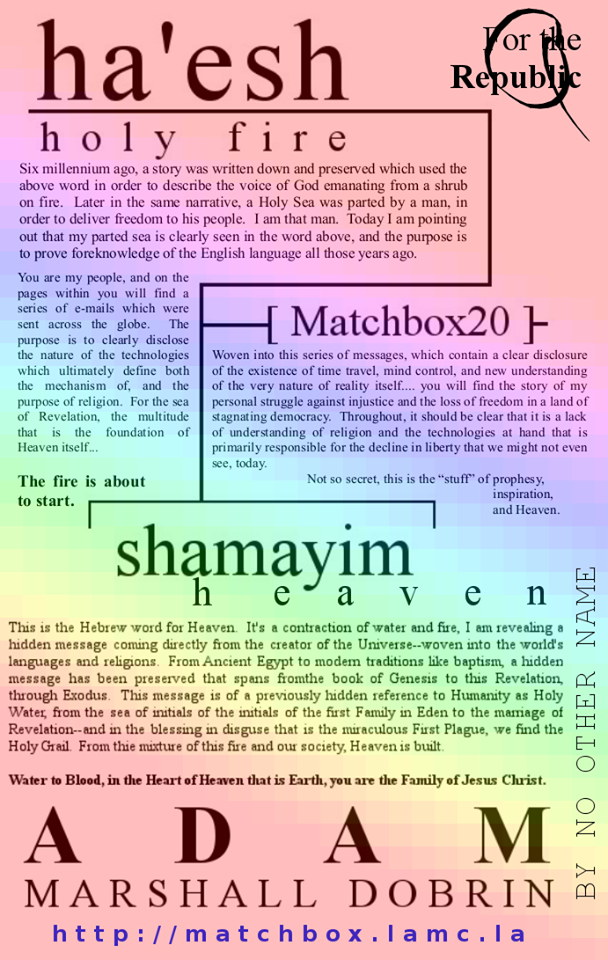

I am accepting charitable donations,.
ETH: 0x66e2871ef39334962fb75ce34407f825d67ec434 | BTC: 38B6vGaqNvMyTtoFEZPmNvMS7icV6ZnPMm | xDAI: 0x66e2871ef39334962fb75ce34407f825d67ec434
(function() { // DON'T EDIT BELOW THIS LINE
var d = document, s = d.createElement('script');
s.src = 'https://dotty-sign2r-jenmar.disqus.com/embed.js';
s.setAttribute('data-timestamp', +new Date());
(d.head || d.body).appendChild(s);
})(); // HIGHLIGAHT TEXT TO COMMENT/EDIT
F O R T H E I N I T I A L K E Y S , S H E E X A N D N D A N D A SEE W H Y SEA

With an epic amount of indigestion Indiana Jones sweeps in to mar the visage of an otherwise glistening series of fictitious characters, with names like Taylor and Mary Kate remind us all that we are not playing a video game here in this place. the "J" of the "Nintxndo Entertainment System" calmly stares at Maggie Simpson thinking "it's a PP" and reminds us that it's not just the "gee, I e" of her name that contradicts the Magdaln-ish words her soul speaks through her name--and then with a smirk he points out "Gilgamesh" and "gee whiz, is Eye L?" that really does go to the heart of this lack of discussion, this "sh" that begins El Shaddai and words as close to our home as "shadow" and "shalom." Quite the fancy "hello" you've managed to sing out from behind angry chellos and broken fiddles, and here I am still wondering why it is that "girl" connects to the red light that once meant charity and now glows with the charity of truth... the truth that we are inHell. Shizzy.

Homer "on the range," maybe more closely connected to the Ewok of Eden and Hansel's tHeoven that Peter Pan still comes and cries could so easily be made into something so much better, if only we had the truth--and by that I mean if only you were speaking about, and reacting to a truth that is painted on the sky, in your hearts, in every word we speak and in everything that we do. If only we were acknowledging this message that screams that "children need not starve" with something more than donating virtual chickens to nations of Africa and watching Suzanne Summers ask for only a few dollars a day on TV. If only you would understand that this message that connects video games like "Genxsis" to "bereshit" because Eden is a "gee our den" that tended itself before Adam had to toil with the animals in order to survive. For some reason beyond my control and well outside my realm of understanding words like "I too see this message from God" and "I would not let children starve either" never seem to escape your lips in any place where anyone will ever see that you thought those things, or meant to call a reporter; eventually. Even with "AIDS of nomenclature" to avoid this DOWN WARD spiral into a situation and a land that I find difficult to imagine actually ever "existing" but here in this place I do see "how" it comes about, and between you and I it really does appear that nearly all of the problems we are dealing with here have come from another place, a further time; and while it might be with the "greatest of intentions" that we are trying to deal with them; I can't help but feeling that our "virgin sea" has had more than just it's innocence taken away from it in this story of "Why Mary" that might connect to "TR IN IT Y" just as much as it connects to Baltimore, Maryland.

I should be clear that I'm not blaming Nanna, or Mary; but the actual reason for the name "Wymar" and that's because she, like Taylor, acted as a microcosm for a sea (or more than one, Mom, sen) that was quite literally possessing her. It's sort of difficult for me to explain even what that looks like let alone what it feels like; but my observations tell me that she/you are not unhappy about the interaction, one which appears very foreign to me. Of course, the "eye" that I write with and the same kind of "inspiration" that you can see in the lyrics and skill of many musicians are also examples of this same kind of interaction. For example, Red Hot Chili Peppers sings a song called "Other Side" that explains or discusses the thing I see as Medusa in the words "living in a graveyard where I married a sea" which also does a good job of connecting to the name Mary. As strange as might sound to think a group of people would be speaking through a single person... we are staring at "how it is" that could be possible, and possibly at exactly how it happened. Normally I would have said it was obvious, but to need to actually say that becoming a single mind would be a serious loss for our society--well, that's telling. You might think it's silly, but I'm telling you I see it happening, I see it--and you see it in the Silence and the message.

till, it appears to me as if this "marriage" that I see described in our Matrix in the question "min or i" seems to be doing nothing more than keeping us all from discussing or acting on this information--something that certainly isn't in our best interest.
o here we are, staring at a map all over the ground and all around us with the primary destination of "building Heaven" through mind uploading, virtual reality, and judging by the pace of things we'd probably have all of that good and ready in about three generations. The map has a little "legend" with a message suggesting that those things have already been done and we are in the Matrix already; and it appears that the world, I mean Medusa, is deciding we should put off seeing the legend at least until the next generation. I see how that makes sense for you. That's sarcasm, this is why I keep telling you that you are cupid.

It is a big deal, and there's a significant amount of work involved in merging an entire civilization with "virtual reality" and you might see why he calls it a hard road--at least in the word "ha'rd." Honestly though, it's the kind of thing that I am pretty sure the future will not only be happy that we did, but they'd thank us for putting in the effort of adapting to things like "unlimited food" and "longevity" increased by orders of magnitude.

That's not sarcasm, these things are actually difficult to guess how exactly we'll go about doing them; they are a huge deal--all I can tell you is that not "talking about it at all" is probably not going to get us there any faster. Point in fact, what it might do is give a "yet to be born" generation the privilege of being the actual "generations of Perez."
I see why you aren't saying anything. That's sarcasm, again. The good news is that it really has been done before; though if I told you that someone turned stone to eggplant parm, would you laugh at me?

o, back to what is actually standing between "everyone having their own Holodeck in the sky" and you today; it is the idea that this message is not from God. More to the point it is the apparently broad sweeping opinion that hiding it is a "good thing" and through that a global failure to address the hidden interaction and influence acting on our minds used to make this map--and also to hide it. With some insight, and some urging; you might see how the sacredness of our consciousness is our souls is something that is more fundamental than "what kind of tools we have in the Holodeck to magically build things" and how and why the foundation of Heaven is truly "freedom itself" and how it comes from right this very moment for the first time, ever. Continuing to treat this influence as "schizophrenia" is literally the heart of why this map appears to be that--to show us how important it is to acknowledge the truth, and to fight for the preservation of goodness and logic over secrecy and darkness.

Again, something that nobody is really doing here and now, today. From this newfound protection of our thoughts, of who we are; we see how technology can be used to either completely invalidate any kind of vote by altering our emotions; or how it could be used to help build a form of true democracy that our world has yet to see. It is pretty easy to see from just band names like The Who and KISS and The Cure how the influence of this external mind can be proven, and shown to be "helpful," you know, if we can ever talk about it on TV or on the internet.

It's important to see and understand how "sanity"--the sanity of our entire planet hangs in the balance over whether or not we acknowledge that there is actually a message from God in every word--and today this place appears to be insane. It should be pretty easy to see how acknowledging that this influence exists and that it has a technological mechanism behind it turns "schizophrenia" into "I know kung fu" ... forced drug addiction and eugenics into "there's an app for that" and the rash of non random and apparently unrecognized as connected terrorist attacks and school shootings into Minority Report style pre-crime and results in what is clearly a happier, safer, and more civilized society--all through nothing more than the disclosure of the truth, this map, and our actual implementation.

With a clearer head and grasp of the "big picture" you might see how all of these things, connected to the Plagues of Exodus revolve around the disclosure that this technology exists and the visibility of this message showing us how we might use it for our benefit rather than not knowing about it. At the foot of Jericho, it is nothing short of "sanity" and "free thought" that hang in the balance. Clear to me is that the Second Coming, seeing "my name" on television is a good litmus test for the dividing line between light and darkness, heaven and hell.
The point is the truth really does change everything for the better; once we start... you know, acting on it.


T H E B U C K S T O P S H E R E

ON AM B I GUI TY


S T A R R I N G . . . B I A N C A


R THEY LANGUAGE OUTLIERS?

With some insight and "a clue" you can see clearly how these works of art show that the proof of Creation you see in every letter and every word runs much deeper... adding in things like "RattleRod" and the "Cypher" of the Matrix to the long list of here-to-fore ignored verifiable references to the Adamic Language of Eden. Here, in apple, honey and "nuts" we can see how the multi-millennium old ritual I call "Ha-rose-ettes" is actually part of a much larger and much older ritual designed to stop secrecy ... perhaps especially the kind that might be linked to "ritual."
These particular apple and honey happen to tie Eden to the related stories of Exodus and Passover; connecting Eden to Egypt forevermore. Do see "Lenore," it is not for no reason at all; but to help deliver truth and freedom to the entirety of Creation; beginning here, in Eden.


HERE'S LOOKING AT YOU, KID
On a high level, I tell myself every morning that 'its not really me." It's not me that the world hates, or me that the world is rejecting. I believe that, I really do; I see that what is being hidden here is so much bigger than any single person could ever be--what is being hidden is the "nature of reality" and a fairly obvious truth that flies in the face of what we've learned our whole lives about history and "the way things are." Those few early details lead me to the initial conclusion that what is working behind the scenes here is nefarious, hiding a message that would without doubt shake things up and change the world--and nearly across the board in ways that I see as "better" for nearly everyone. It's a message at it's most basic level designed to advocate for using this disruption in "normalcy" to help us revolutionize democracy, to fix a broken mental health and criminal justice system--just to name the few largest of the social constructs targeted for "rejuvenation." On that word the disclosure that we are living in virtual reality turns on it's head nearly everything we do with medicine, and I've suggested that AIDS and DOWN SYNDROME were probably not the best "visual props" we could have gotten to see why it's so important that we act on this disclosure in a timely manner. After mentioning the ends of aging and death that come eventually to the place we build, to the place we've always thought of as Heaven... it becomes more and more clear that this force fighting against the dissemination of a truth so obvious it's in every word and everything we do--it becomes clear it's neither you, nor acting in your best interest.

I know I've got the eye of the tiger, there's no doubt; and it's pretty clear from "YAD?" (the Hebrew for...) and ha'nd that we can see the clear hand of God at work in a design that marks my initials not just on the timeline, or at 1492, at A.D. I B; but in the Hebrew name for this place called El Shaddai, see how A.D. is "da eye" and in some other names like Adranus, A.D. on "it's silly" and A.D. on Ai that might tie me to the Samof Samurai (but, are you Ai?) in more depth of detail than simply the Live album "Secret Samadhi." I try to reflect on how it is that this story has come about, why it is that everything appears to be focused on me--and still even through that sincere spotlight nobody seems to be able to acknowledge my existence with more words than "unsubscribe" and "you're so vain." With one eye in the mirror, I know ties to Narcissus (and you can too), soaring ever higher--linking Icarus to Wayward Son and to every other name with "car" in it... like "carpenter" and McCarthy the older names of Mercury and even Isacriot (I scary? is car-eye... owe Taylor) and some modern day mythological characters like Jim Carrey and Johnny Carson. As far as Trinities go, carpenter's a pretty good one--tying to my early reck and a few bands and songs from The Pretty Reckless to Dave Matthews' "Crash Into Me" all the way to the "pen" you see before you linking Pendragon to Imagine Dragons.

I wonder why it is that all of these things appear, apparently only to me, to point to a story about all the ways that a sinister hidden force has manipulated our society into being unable to "receive' this message--this wonderful message about making the world a better place and building Heaven--with any fanfare at all. It's focused now on a criminal justice system that clearly does not do any kind of "rehabilitation" and on a mental health industry and pharmaceutical system that treats a provable external attack on our own goodness and well being as some kind of "internal stimulus" and makes you shy away when I point out why "stem" is in system and why "harm" in pharmacy. From that we move a little bit past "where we are in this story" and I have to point out how "meth" ties to Prometheus and Epimetheus and how and why it is I know without doubt that this story has been relived numerous times--and how I am so sure that it's never been received, as we are here again listening to how songs like "Believe" and the words "just to lead us here to this place again" connect to Simon and Garfunkel's" the Sound of Silence... and still to this day you will balk at noticing that "Simon" has something to do with the Simpsons, and something to do with the words "simulation" and "Monday." To see me is to see how things might be done better--how "addicitonary" might tie to the stories of Moses' Lisp and to Dr. Who's "Bells of Saint John" with a sort of "web interface" to the kinds of emotion we might want to "dial down..." rather than Snicker in the background as we see them being artificially created and enhanced in order to build a better "fiery altar."

I can point out "Silicon" harrowing down at us from words like "controversial" and show you Al in "rascal" and "scandal" but not to see that we are staring at school shootings and terrorism that are solved instantly by this disclosure, by Al of Quantum Leap and by the Dick of Minority Report and A Scanner Darkly is to ignore just what it is that we are all failing to Si. I should point out that those two "sc"'s link to a story about Eden and they mean "sacred consciousness" and at the baseline of this event and everything we are not doing is the fact that our desires and beliefs are being altered--all of this comes down to "freedom of thought" here and now.


I could tell you that "looking at me" will show you that even the person who tries every day to do everything he can to save the entire world from slavery, and from "thought-injury"--even I can be made "marred" and you all, this whole world stupid enough to think that you are, of your own volition, hiding Heaven itself from yourselves... to what? To spite me? It, the focal point of our story might come down to you realizing that something in some esoteric place is playing "divide and conquer" with our whole--in secret playing on our weaknesses to keep us from acting on the most actionable information that ever was and ever will be. Still, we sit in silence waiting for me... to speak more?
Between Nero's lyrical fiddling, a Bittersweet Symphony, and true "thunderstanding" the sound of Thor's hammer... "to help the light" that'ls "or" in Hebrew, of Orwell and Orson and .. well, it's really not hard to see and hear that the purpose and intent of "all this noise" is to help us find freedom and truth. C the Light of "singing..."
I can tell you once again how silly the world looks, this multi-decade battle between "the governmentof the people" and the "government of the workers" resulting in what is nothing short of a hands down victory to the corporation. Is it humor meant to divide, or ludicrousness created with the purpose of unification?
But really at it's most basic level what this boils down to is a global group decision not to care about the truth, about reality, about what's really brought us to this place--with solutions in hand and a way to make everything better. We've decided that censorship is OK, and that the world is not all that bad "just the way it is" even though it's creator is screaming in your ear telling you to change as quickly as you possibly can. I believe that God has written this story to make "seeing me" the thing that catalyzes "change for the better" it appears to be the design of not just me but also this place--hey, here I am.
Happy Veteran's Day.


Yesterday, or maybe earlier today--it's hard to tell at this moment in the afternoon just how long this will take... I sent an image that conveys a high level implication that we are walking around on a map to building something that we might liken to an "ant farm" for people. I don't mean to be disparaging or sleight our contribution to the creation of this map--that I imagine you must also see and believe to be the kind of thing that should remain buried in the sands of time forever and ever--or your just have yet to actually "understand" that's what the plan part of our planet is talking about... what I am trying to do is convey in a sort of "mirrorish" way how this map relates to a message that I see woven in religion and in our history that it significantly more disparaging than I would be. It's a message that calls us "Holy Water" at the nicest of times, water that Moses turns to "thicker than water" in the first blessing in disguise--and to tell you there is certainly a tangible difference between the illusions of the Pharaoh's and the true magic performed by my hand, is nearly exactly the same amount of effort put in to showing you that the togetherness that we are calling "family" here in this place comes from both seeing and acting on the very clearly hidden message in every single idiom showing us all that our society in this story of Exodus is enslaved by a hidden force--and reminding us that we like freedom.
It's not just these few idioms, but most likely every single one from "don't shoot the essenger" to "unsung hero" that should clue us in to exactly how much work and preparation has come into this thing that "he supposes is a revolution." It's also not just "water" describe me and you, in this place where I am the "ant' of the Covenant (do you c vampires or Hansel and Gretel!?!?) but also "lions" and "sheep" and "salt" and "dogs" and nearly everything you could possibly imagine but people; in what I see must be a vainglorious attempt to pretend he actually wants us to "stand up for ourselves" in this place where it's becoming more and more clear with each passing moment that we are chained to these seats in the front row of the audience of the most important event that has ever happened, ever.

Medusa makes several appearances, as well as Arthur Pendragon, Puff the Magic Dragon, Figment, Goliath, monster.com, the Loch Ness Monster in this story that's a kind-of refl ex i ve control to stop mind control; and to really try and show us the fire of Prometheus and the Burning Bush and the Eternal Flame of Heaven are all about freedom and technology ... and I'll remind you this story is ... about the truth--and the truth here is that if you aren't going to recognize that whatever it is that's going on here in secret, below the surface is negatively affecting our society and life in general than we aren't going anywhere, ever. I need you to figure out that this message is everywhere to make sure you don't miss the importance of this moment, and the grave significance of what is being ignored in this land where Sam is tied not just to Samsung and to Samael in Exodus but also to Uncle Sam and macaronic Spanglishrew outliers and that it doesn't take much free thought at all to really understand that we are watching "free thought" disintegrate into the abyss of "nospeak." We are watching our infrastructure for global communication and the mass media that sprawls all over the globe turn to dust, all because you have Satan whispering in your ear--and you think that's more important than what you think, what I think, and what anyone else on the Earth might ever say. You should see a weapon designed to help ensure that don't lose this proof that we are not living in reality, that there is "hidden slavery" in this place--and you should see that today it appears you are simply choosing not to use it.
I hope you change your mind, I really do. This map on "how to build an ant farm" starts by connecting Watergate and Seagate together with names like Bill Gates and Richard Nixon; and with this few short list of names you should really understand how it is that "Heaven" connects both technology like computers and liberty like "free speech" to a story that is us, and our history. You might see that "salt" could either be a good thing or not--take a look around you, are you warming a road to Heaven or are you staring at the world being destroyed--and doing nothing at all about it?
I guess I can point out again how "Lothario" links this story that ties names like my ex-wife's Nanna to "salt" also, but the "grand design" of this story doesn't seem to have any effect on you. Listen, if you do nothing the world is being destroyed by your lack of action--there's no if's and's or butt's about it. I feel like I need to "reproduce' old messages here or you will never see them--that's what web site statistics tell me--and we all know it's not true. What am I missing? What are you missing?

SEE OUR LIGHT


So... here we are... listening to the legendary father of the message (that's "abom" in Adamic Spagnlishrew) point out all of the sex jokes hidden in religion and language from sexual innuendo to Poseid


ABOMINATION
So long story short is that the answer here is "abomination" and the question, or the context is "I nation." Whether it's Medusa speaking for the Dark United States or the nation of Israel speaking to either Ra or El depending on the day, the bottom line is that a collective consciousness speaking for everyone on a matter of this importance in a cloud of complete darkness on Earth is a total and undeniable abomination of freedom, civilization, and the very humanity we are seeking to preserve. The word reads something like this to me "dear father of the message, I am everyone and we think you are an abomination, fuck off." My answer of course is, IZINATION. Which humorously reminds me of Lucy, and Scarlet Johannson saying "I am colonizing my own brain" so here's some pictures of her. She is not an abomination, by the way; she's quite adorable. You'll probably notice there's some kind of connection between the map--the words speaking to the world, and the abomination, as if the whole thing is a story narrated in ancient myths.


WAKE UP, "SHE" A MESSAGE TO YOU ABOUT THE FUTURE
You might not think "it's you," but the manifestation of this "snake" in our world is your silence, your lack of understanding or willingness to change the world; and whether or not you're interested in hearing about it, it's the monster that myths and religion have spoken about for thousands and thousands of years. It's a simple matter to "kill Medusa" all you have to do... is speak.
Take special note, "freedom of speech" and "freedom to think for yourselves" are not a group decision, and you do not have the right to force (either overtly or subtly, with hidden technology perhaps combined with evil deceit) others not to talk about anything. Especially something of this importance.
DESOLATION
If you didn't connect "Loch" to John Locke, now you have; see how easy this "reading" thing is? I've gone over the "See Our Light" series a few times, but let me--one more time--explain to you just how we are already at the point of "desolation" and with shining brilliance show you how it's very clear that it is "INATION" and "MEDUSA" that are responsible for this problem.
Seeing "Ra" at the heart of the names Abraham and Israel begins to connect the idea that our glowing sun in the sky has something to do with this message about "seeing our light" is being carried by a stone statue on Ellis Island (where you'll see the answer another part of the question of Is Ra El?). I've connected her to the "she" of both shedim and Sheol, which reads as "she's our light" and is the Hebrew name for Hell.


Of course you noticed that the Statue of Liberty does in fact share it's initials with SOL, the the light above and you can see her torch dimly lighting the way through the night; Now you can connect "give us your tired and your poor" to the Lazman of both the lore of Jesus Christ and the Shehekeyanu; a prayer about the sustainment of life and light up until this day. That same torch connects to the Ha-nuke-the-ahah depiction of Christ, Judah Maccabee's lit MEN OR AH, which delivers not only a solution to the two letter key of "AH" as All Humanity that pervades nearly every bride of Revelation from Sarah to Leah; but also to the question of equality answered in our very own American history, beginning with the same three letter acronym now lighting the Sons of Liberty.
Dazed and Confused does a good job of explaining how this name is itself a prophesy designed by Hand of God'; explaining that these Sons of Liberty were all white slave owning wealthy men fighting to stop paying their taxes, rather than delivering liberty to the slaves or women, who were both disenfranchised for quite some time. Or maybe MEN OR AH has something to do with the angels of Heaven, in which case you might be SOL if you aren't a girl and you want to be "be good friends with Ra." Just kidding. Kinda.
DESOLATION by the way reads something like "un see our light at ION" which is God's way of saying "at the point of believing that hiding Adam is a good thing" and that connects to the end of Creation and also the now lit by modern day evil the word "rendition." Our end, it "ion." In religious myth, the Messianic David clung to the city Zion (end the "i owe n") which also links to "verizon" (to see, I Z "on") and HORIZON which has something to do with the son rising today-ish.
The story of MEDUSA lights another psuedo-religious idea, that the words "STONE" of both "brimstone" and it's Adamic interpretation "South to Northeast" have something to do with the phrase "Saint One" turned into a single hero against his will by the complete and utter inaction of everyone around him. In the words of Imagine Dragons "I'm waking up to action dust." At the same time, you can believe that the light of this particular son, comes not just from reading these words forwards, but the backside as well, and you'll hopefully see it's not coincidental that the other side of this coin is that "nos" means we, and us... and Adamically "no south." See the light of "STONE" also connecting to Taylor Momsen's rose arrow painted on her back, and the sign of my birth, Sagittarius... which in this particular case links to the Party of the Immaculate Conception of the eternal republic of the Heavens.
.
PRESS RELEASE\... A GREAT SIGN APPEARED IN THE HEAVENS


בָּרוּךְ אַתָּה יְיָ
אֱלֹהֵינוּ מֶלֶךְ הַעוֹלָם
שֶׁהֶחֱיָנוּ וְקִיְּמָנוּ
וְהִגִּיעָנוּ לַזְּמַן הַזֶּה׃
IN ... THE BOOK OF NAMES
LETS SEE IF YOU CAN FIGURE OUT WHO THEY ARE :)


I'LL DO YOURS FOR A 50 DOLLAR DONATION,
I'M BROKE.. MAYBE THAT'S WHY I CAN'T GET A DATE.
HAVE A GREAT SOLDAY

The "gist" of the message is verifiable proof that we are living in a computer in simulated reality... just like the Matrix. The answer to that question, what does that mean--is that God has woven a "hidden" message into our everything--beginning with each name and every word--and in this hidden Adamic language, he provides us with guidance, wisdom, and suggestions on how to proceed on this path from "raelity" to Heaven. I've personally spent quite a bit of time decoding the message and have tried to deliver an interesting and "fun" narrative of the ideas I see. Specifically the story of Exodus, which is called "Names" in Hebrew discusses a time shifted narrative of our "now" delivering our society from a hidden slavery (read as ignorance of advanced technologies already in use) that is described as the "darkness" of Exodus. If you have any questions, ideas to contribute or concerns... I'd love to hear from you this whole thing really is about working together--Heaven, I mean.
ou r evolution minority report to supermax
bereshit
bread is life
bread is life


E ' o e
L m r x
L t y
O a
I HISS.


-Psalm 119 and ((ish))
Are eye Dr. Who or Master Y?
Adam Marshall Dobrin is a National Merit Scholar who was born on December 8, 1980 in Plantation, FL and attended Pine Crest School where he graduated sumofi cum louder in "only some of it is humorous." Later he attended the University of Florida (which quickly resulted in a wreck), Florida Atlantic University, and finally Florida Gulf Coast University--where he still has failed to become Dr. Who. While attending "school" He worked in the computer programming and business outsourcing industries for about 15 years before proclaiming to have received a Revelation from God connecting the 9/11 attack and George Bush to the Burning Bush of Exodus and a message about technocracy and pre-crime.Adam, as he prefers to be called, presents a concise introduction to paradox proven by the Bible through "verifiable" anachronism in language some stuff about Mars colonization and virtual reality and a list of reasons why ignoring this is actually an ELE. Adam claims to be Thor because of a connection between music and the Trial of Thor as well as the words "author" and "authority." He suggests you be Thundercats and call a reporter. There is also a suggestion that Richard Nixon and John Hancock are related to a signature from God, about freedom and America... and the "unseeingly ironic" Deepthroat and Taylor Momsen.
They Sung "It's Rael..."
In Biblical characters from Mary to Hosea, to see "sea" in Spanish, and in the Taming of the Spanglishrew ... a message is woven from the word Menorah: "men, or all humanity?" to the Statue of Liberty, and the Sons of Liberty, and the light above us, our SOL; which shows us that through the Revelation of Christ and the First Plague of Exodus, a blessing in disguise--turning water to blood, the sea to family; a common thread and single author of our entire history is revealed, a Father of our future. A message of freedom shines out of the words of scripture, revealing a gate to a new technologically "radical" form of democracy and a number of unseen or secret issues that have stalled the progress of humanity... and solutions, solutions from our sea.The Revelation shows us that not only ever word, but every idiom from "don't shoot the messenger" to "blood is thicker than water" we have ties to this message that pervades a hidden Matrix of light connecting movies and music and history all together in a sort of guide book to Salvation and to Heaven.
Oopsy.
His Revelation, woven into his life, continues to suggest that skinny dipping, forced methamphetamine addiction, and lots and lots of "me A.D." as well as his humorous depiction of a dick plastered over the Sound of Silence, his very Holy click, have something to do with saving our family and then the entire Universe from hidden mind control technology and the problems introduced by secret time travel. From the trials and tribulations of "Job" being coerced and controlled into helping to create this wall of Jericho; we find even more solutions, an end to addiction, to secrecy, and to this hidden control--a focal point of the life of Jesus Christ.It tells us a story of recursion in time, that has brought us here numerous times--with the details of his life recorded not only in the Bible but in myths of Egyptian, Norse, and Greek mythology. The huge juxtaposition of the import of the content of the message shows the world how malleable our minds really are to this technology, how we could have been "fooled" into hiding our very freedom from ourselves in order to protect the "character" of a myth. A myth that comes to true life by delivering this message. In truth, from the now revealed content of the story of this repeated life, it should become more and more clear that we have not achieved success as of yet, that I have never "arrived whole" and that is why we are here, back again.
Home is where the Heart is...
When asked how He thinks we should respond to his message, He says "I think we already cherish it, and should strive to understand how it is that freedom is truly delivered through sharing the worth of this story that is our beginning. 'tis coming." Adam claims to be God, or at least look just like him and that the entirety of the Holy Scriptures as well as a number of ancient myths from Prometheus to Heimdallr and Yankee Doodle are actually about his life, and this event. An extensive amount of his writing relates to reformation of our badly broken and decidedly evil criminal justice system as well as ending the Global hunger crisis with the snap of his little finger.He has written a number of books explaining how this Revelation connects to the delivery of freedom (as in Exodus), through a message about censorship among other social problems which he insists are being intentionally exacerbated by Satan--who he would ha've preferred not to be associated with.
He adds, "how do you like me now? How bow dah, god 'nuff?"

HEAVEN AND EARTH AS ONE, UNITED.
ᐧ


I T R E A L L Y D O E S M E A N "FREEDOM" B R E A D I S L I F E
Tying up loose eadds, in a similar vain to the connection between the Burning Bush and universal voting now etched by-stone, there exists a similar missing Link connecting the phrase "it's not a a gam" to Mary Magdeline to a pattern that shows us that the Holy Trinity and our timelines are narrated by a series of names of video game systems and their manufacturers from "Nintendo" to Genesis and the rock of SEGA. Through a "kiss" and the falling of a wallthe words bread and read are tied up and twisted with the story of this Revelation and the heart of the word Creation, "be the reason it's A.D." It's a strong connection between the idea that virtual reality and Heaven are linked by more than simply "technology" but that this message that shows us that these tools for understanding have fallen from the sky in order to help us understand why it is so important, why I call it a moral mandate, that we use this information to follow the map delivered to us in the New Testament and literally end world hunger, and literally heal the sick; because of the change in circumstance revealed to us. These simple things, these few small details that might seem like nothing, or maybe appear to be "changing everything" they are not difficult things to do, in light of Creation, and few would doubt that once we do see them implementied here... the difference between Heaven and Hell will be ever so clear.
A while ago, in a place called Kentucky... this story began with a sort of twisted sci-fi experience that explained a kind of "God machine" that could manipulate time and reality, and in that story, in that very detailed and interesting story that I lived through, this machine was keyed to my DNA, in something like the "Ancient technology" of Stargate SG-1 and Atlantis mythology. My kind brother Seth made a few appearances in the story, not actually in person but in fairly decent true to life holograms that I saw and spoke to every once in awhile. He looked a little different, he had long hair; but that's neither here nor there, and he hasn't really had long hair since I was a little boy. He happens to be a genetic engineer, and I happen to be a computer person (although he's that too, now; just nowhere near as good as me... with computers) so the story talked a little bit about how I would probably not have used DNA as a key, since I'm not a retard, and he probably wouldn't either, because works in that field (cyclone, huracan, tornado). So then the key we imagined was something ... well, Who cares what the key is, right?
o back to the task at hand, not so long ago, in a place called Plantation I was struck by lightning, literally (well not literally) the answer to a question that nobody knew was implanted in my mind, and it all came from asking a single simple question. I was looking for more chemistry elements in the names of the books of the Holy Bible, after seeing Xenon at the "sort of beginning" of Exodus, where it screams "let there be light" in Linux and chemistry (and I've told you that a hundred times by now). So it didn't take long to follow the light of that word and read Genesis backwards, and see, at the very beginning of that book, Silicon... in reverse.
So, what about God's DNA, anyway?
What's he really made of?
SIM MON S WILD ER ROD DEN BERRY
o after seeing Silicon, and connecting that to the numerous attempts I've made to show a message connecting The Matrix to the Fifth Element (as Silicon) describing what it is that God believes we should do with this knowledge--and see that it is narrated as the miracles of Jesus Christ in the New Testament... these names came to me in quick succession, an answer to the question. I suppose any Gene will do, these three though, have a very important tie to the message that connects Joshua's Promised Land of flowing Milk and Honies to ... a kiss that begins the new day (I hope) ... and a message about exactly how we might go about doing magical things like ending world hunger and healing the sick using technology described ... in Star Trek and Stargate. A "religion of the Stars" is being born.
That's great... it starts with an earthquake. R.E.M. and a band ... 311. Oooh, I can see it coming down... The Petty Reckless. An evening's love starts with a kiss. Dave Matthews Band. I wanna rock and roll all night and party every day. Adam. I mean Kiss. Are you starting to see a pattern form? Birds, snakes, and aeroplanes? It's that, it's the end of the world as we know it, and I feel fine.
In that song we see clues that more than just the Revelation of Christ is narrated by John on an island called Patmos. There yet another Trinity, starting with "Pa" and hearting Taylor Momsen's initials... most likely for a reason... and the Revelation ends with a transition that I hope others will agree with me turns "original sin" into something closer to "obviously salvation" when we finally understand the character that is behind the message of da i of Ra... and begin to see the same design in the names of Asmodai and in this Revelation focusing on freedom and truth that really does suggest Taylor can't talk to me in any way other than "letting freedom sing" in this narrative of kismet and fate and free will and ... then we see that narrative continue in the names of bands, just like the 3/11/11 earthquake is narrated in not just R.E.M.'s song but in the name 311. Just like the 9/11 attack is narrated not just in that same song (released in 1987) and "Inside Job" (released in 2000) but also in "Fucked up world."
Dear all of you walking dumb and blind, this same quake is narrated in Taylor's Zombie; waiting for the day to shake, all very similar to Cairo and XP, perhaps a "fad" of doublethink in the minds of the authors singing about a clear prophesy in the Bible; this connection between the day, 3/11 though, and the name of a band and the day of an arrest and the verse Matthew that tells you clearly you have now been baptized in water and fire... it shows us the design of a story whose intent and purpose is to ensure that we no longer allow for things like hurricanes and earthquakes and murder and rape to be "simulated" that we build a better system, that doesn't allow for 'force majeure" to take lives for no reason at all.
Not just in band names, but in the angels names too, in all of our names; we see this narration continue. The Holy Water that is central to the baptism of Christ is etched into Taylor's name, between "sen" and "mom" the key to the two Mary's whose names contain the Spanish for "sea" in a sort of enlightenment hidden in plain sight. In "Simmons" the key connection between today, this Biblical Monday, and the word "simulation" that ties to Simpsons and simians and ke
It's a song and dance that started a long time ago, as you can see from the ancient Hebrew word for "fate" and in more recent years a connection to the ballroom of Atlantis in the Doors 5 to 1 and Dave sang about it in Rapunzel and then Taylor shook a tambourine on the beach only minutes away from me--but never said "hi." The battle of the bands continues tying some door knocking to a juxtaposition between "Sweet Things" and "Knocking on Heavens door" all the way to a Gossip Girl episode where little J asked a question that I can't be sure she knew was related, she said... "who's that, at the door?"
What it really all amounts to, though, is the whole world witnessing the Creation of Adam and Eve from a little girl stuttering out "the the" at the sight of the Grinch himself, and then later not even able to get those words off her lips... about seeing how Creation and modern art are inextricably tied to religion, to heaven, and to freedom.
The bottom line here, hopefully obvious now, is that you can't keep this message "simple" it's a Matrix woven between more points of light than I can count, and many more that I'm sure you will find. It's a key to seeing how God speaks to me, and to you; and how we are, we really are that voice. Tay, if you don't do something just because God called it "fate" you are significantly more enslaved than if you do--and you wanted to. "Now I see that you and me, were never meant, never meant to be..." she sang before I mentioned her, and before she ever saw me... in a song she calls "Nothing Left to Lose" and I see is not really just another word for freedom.
We have plenty to lose by not starting the fire, not the least of which is Heaven itself. Understand what "force majeure" really means to you and I. Ha, by the way.
"DADDY, I WANT IT NOW."
VERUKA SALT. whose name means "to see (if) you are the Body of Christ" whined, in the story of Will Why Won Ka, about nothing more or less than Heaven on Hearth, than seeing an end to needless torture and pain. To see if you are the "Salt of the Earth" warming the road to Heaven; honestly to see if you can break through this inane lie of "I don't understand" and realize that breaking this story and talking about what is being presented not just by me and you but by history and God himself is the key to the car that drives us home. To see how Cupid you really are.
STOP NODDING, TURN AROUND AND CALL A REPORTER.
The story of Willy Wonka ties directly to the Promised Land of Flowing Milk and Honey to me; by showing us a river of chocolate and a the everlasting God starter, (er is it guardian of B stopper) that opens the doors of perception about exactly what kinds of mistake may have been made in the past in this transition to Heaven that we are well on the way of beginning. Here, in the Land of Nod, that is also Eden and also the Heart of the Ark we see warnings about "flowing milk and honey" being akin to losing our stable ecosystem, to losing the stuff of life itself, biology and evolution, and if we don't understand--this is probably exactly the mistake that was made and the cause of the story of Cain and Abel. So here we are talking about genetic engineering and mind uploading and living forever, and hopefully seeing that while all things are possible with God--losing the wisdom of the message of religion is akin to losing life in the Universe and with that any hope of eternal longevity.
With some insight into religion, you can connect the idea that without bees our stable ecosystem might collapse, to the birds and the bees, and a message about stability and having more than one way to pollinate the flowers and trees and get some. Janet and Nanna, by the way, both have pretty brown eyes, but that probably comes as no surprise to you.
Miss Everything, on the other hand (I hear, does not have brown eyes), leads us to glimpse how this message about the transition of our society might continue on in the New Testament, and suggest that we do need to eat, and have dinner conversation, and that a Last Supper might be a little bit more detrimental to our future than anyone had ever thought, over and over and over again. To see how religion really does make clear that this is what the message is about, to replace the flowing milk we have a "Golden Cow" that epitomizes nothing less than "not listening to Adam" and we have a place that believes the Hammer of Judah Maccabee should be ... extinct. You are wrong.
Of course the vibrating light here ties this Gene to another musical piece disclosing something... "Wild Thing" I make your heart sing. You can believe the Guitar Man is here to steal the show and deliver bread for the hungry and for the wise. Here's some, it's not just Imagine Dragons telling you to listen to the radio but Jefferson Starshiptoo, and Live.
When you wake up, you can hear God "singing" to you on the radio every single day; many of us already do. He's telling you to listen to me, and I do not understand why you do not. You don't look very Cupid, if you ask me.
WHAT DO YOU THINK YOU ARE,
DAN RE Y NO LDS?
I think we all know what the Rod of Jesus Christ is by now.
It is a large glowing testament to f
It is the doorway to seeing that what has been going on in this place hasn't been designed to hide me, but to hide a prosperous future from you--to hide the truth about our existence and the purpose of Creation--that all told, you are standing at the doorstep of Heaven and stammering your feet, closing your eyes, and saying "you don't want to help anyone."
If delivering freedom, truth, and equality to you does not a den make,
well, you can all suck it
Between Stargate and Star Trek it's pretty easy to see a roadmap to very quickly and easily be able to end world hunger and heal the sick without drastically changing the way our society works, it's about as simple as a microwave, or a new kind of medicine--except it's not so easy to see why it is that you are so reluctant to talk about the truth that makes these things so easy to do. You see, your lack of regard for anyone anywhere has placed you in a position of weakness, and if you do nothing today, you will not be OK tomorrow.
It's pretty easy to see how Roddenberry's name shows that this message comes from God, that he's created this map that starts with an Iron Rod throughout our history proving Creation, whose heart is a Den of Family who care about the truth, and about freedom, and about helping each other--not what you are--you are not that today. Today you are sick, and I'd like you to look at the mirror he's made for you, and be eshamden (or asham).

Realize, realize... what you are. What you've become, just as I have... the devil in a sweet, sweet kiss.
-Dave J. Matthews



You may or may not have noticed that I am not feeling as compelled to e-mail you every morning; though I do want to check in and assure you that I am still doing "just fine." I noticed that you still haven't followed me on Twitter; just so you know that's contributing to why I'm not doing "wonderful-ly." I've probably mentioned it before, but these three letters "der" mean "dark to right" to me, I see them connecting to Tay in "Lauderdale" and to this victory, in Dave's "the rain melts into wonder;" someone instant messaged me on twitter yesterday, after reading some of my work to ask if I was a follower of Jesus; and my swift reply was "I am that" of course. You probably noticed that "Jesus" reads as "J is us" and you can be sure that it is the same "us" as Uranus; and that it does become "Everyone Living" through the acts of this designed exercise in turning Hell into Heaven. In "rudder" you can see the question "are you d" that links to words like yield and shield, and of course to the name of our times, Medusa. I do hope that you "c" that I am trying to deliver exactly what you need, and so much more. In the last few days I've been absent from "an: no y in g" (come again? an=y) you, I have sent a few extra e-mails to the "rest of the world" and that seems to be doing pretty well right now. For your convenience I've linked this snippet from Twitter to the URL for "following Jesus." That would also help me bother your inbox a little less--understand I connect this concept of "having followers on twitter" directly to the turing point in history where we know our world is saf
Also yesterday I noticed that "<TR>iIN IT Y" is a good "appro x im a tion" for the question "Where is the Matrix?" Errata: I also said "these people" in a message a few days ago in reference to "testifying" that school shootings are mind control related; and forgot ... this link. Finally, you'll notice that "cure.reallyhim.com" has a new name and a new banner image connection the beginning (or is it...) of "Minority Report" to the concepts of "n" and "er" through... Ben Stiller (who starred in both "Permanent Midnight" and "Meet the Fockers" ... which you might read as "f-off Clark Kent /s/ ER").
Also yesterday I noticed that "<TR>iIN IT Y" is a good "appro x im a tion" for the question "Where is the Matrix?" Errata: I also said "these people" in a message a few days ago in reference to "testifying" that school shootings are mind control related; and forgot ... this link. Finally, you'll notice that "cure.reallyhim.com" has a new name and a new banner image connection the beginning (or is it...) of "Minority Report" to the concepts of "n" and "er" through... Ben Stiller (who starred in both "Permanent Midnight" and "Meet the Fockers" ... which you might read as "f-off Clark Kent /s/ ER").

g.


O we're finally on the letter "g" which you might imagine has something significant related to "god" and "good," thinking back it might be the very first "combinatory" letter I "made up" in this whole story, when everything began, this special final letter in the word "morning" was a combination of "c" and "j." A new definition was added that specifically links to the "Times New Roman" font style and to these new times; and with just a little bit of imagination you can probably see just how obvious it is that these definitions are all part of a grande scheme, here from "see j" to my favorite two letters in the alphabet, the "os" of originall si n.
Do see that this particular "o" without an "s" is the cause for "re p et it i on;" our happiness is practically ensured; so long as we actually understand that this message is the beginning of true liberty; and that starts with the word "fire." I now connect "giant" and "grin" to my last name "are I n?" and the "ant" of the Covenant I am currently breaking by "orifacing us"--and never was a party to. I will be emailing less often, thanks for listening.
Grin, I'm "an ant?"


Just to recap, my other favorite glyphs are the "t"of Christ that reads chr(t) and connects to the sign of my birth, as well as the word "stone" and is clearly a pictograph of a cross; and the "n" of Isaac Newton that asks "are you new to n?" and is clearly a pictograph of "what goes up must come down." There's also "o" that connects to the starsign of our SOL and the signs of Mars, Venus, and Q and "zero." ... oh, and of course the "d is cl" of disclosure the "e" of medicine and Medusa... and how could I forgetthe "l" of obelisk... and the K of "it's me!!!'


It's a little hard to thunderstand exactly how we are going to get from "talkingabout the message" to actually being ableto implement it, I will give you t h a t. It's pretty obvious that "the sim" could just do these things automatically, and there's stories (story after story actually) in the Bible about why that's not a good idea--specifically the "stone to bread" story that links to our reality through "let them eat cake, instead." While you might not have likened Marie Antoinette or "cake" to this Biblical story before (and you might not remember the Fig Newton commercial that further ties it to Eden and Isaac's are you "new to n?" of what goes up and falls must be a glyph of "n"), now they are further linked by songs like "Guitar Man" and "Going the Distance." The problem was, and still is; without any feedback from the world nobody would ever be happy with what "it" or "eye" chose for everyone to have for that first "magically delicious" supper.
ba-ruch sheim k'vod mal-chu-to l'o-lam va-ed
M A L, W H O T O ?

You also might not have noticed the connection between "mal" and "bad" which link my initials to those two letters that are, well, the heart of the word "initials." That "m" really does mean the deliverance of this key to the message all around us--things like "bread" and "cake" and really seeing that bread reads as "be the reason it's A.D." I do hope that I won't be mad; and on that note let me explain that this huge word right above this paragraph is the Hebrew word for "kingdom." In it's pronunciation the malovious key to the Spanish word for "bad" comes to bright light, and these other two letters "Al" for the father-ish-figure that comes after the message has actually been received. Today it's one more in a long list of anachronistic examples of foreign languages that were not yet invented "magically appearing" in ancient Hebrew (and Latin, and Greek, and Japanese... and so on, et. al) . The full line of the most sacred of all Jewish prayers reads "blessed be His glorious kingdom forever and ever" and just looking at those three words above, hear him talking to me, "my son says kingdom is a bad word, who should I pass it down to?" And your answer of course, a resounding "who?"

Certainly it's no accident, this word that also appears in a Michael Jackson song ... somehow related to "heal the world" and once more linking the initials A.D. to Al, this time in the clever reading of "malady" as "bad... A.D. is why" and do understand it's because there's really no good reason at all to be simulating things like earthquakes, or AIDS, or blindness; in a place where it's just cruel and ... well, it should be un·us·u·al. Don't you think?

I'm going to tell you something, if you don't think that "one" is the same "one" that appears in the words "alone" and "stone" then you are not as swift as you think you are. Hear my words, all humanity, Ra is El. In yet another example of "Godspeak" you can tie this entire "movement" to the words "force majeure" and realize that the key clue here is the innuendo that natural disasters are here blamed on "majority force" in French, and our understanding of that, well, that's a true act of God. "Fuck you, see how I'm a" reads the name associated with the 3/11 disaster, Fukushima; and really do understand that just like AIDS and DOWN SYNDROME these things are acts of a name server; and a process of Creation that is designed to show us all just how important it is to speak up when someone says "popular opinion" can make magic happen--in this place, and this year. In the back of my mind, it seems a little bit like your silence is tied to words like Washington, Clinton, and Hilton--and do see that if I "remain as n" it appears as if the keys to the kingdom might just fall into my lap.

I can't tell you for sure; but I think it'spretty obvious that if that did ever happen I would pretty quickly set up a "republic" to help us decide on exactly how the world should be changed together; and I'd probably find a way to make you speak, even if it took more than just turning off a switch that was keeping you from doing it. Every morning, I stare at that switch, and then back at you; and every email I send is my "clever" swipe at the switch, or lever.
You should be smart enough to see that accompanying this message telling us that we need to talk and agree about how these things will be changed, in our shared world, that it comes with a message about how to build a bettergovernmental cystem in this new age of computers--and that message isn't just written in my hand, you can see it clearly written by whomever named Eden, and Microsoft, and Apple, and Gateway, and Watergate and Seagate... and Die Bold. You can see that this process of "changing the world" really does begin with true democracy; and that's something you're going to have to talk out loud, on Earth, in order to participate in.

Yeshua (ישוע, with vowel pointing יֵשׁוּעַ – yēšūă' in
The Hebrew spelling Yeshua (ישוע) appears in some later books of the Hebrew Bible. Once for Joshua the son of Nun, and 28 times for Joshua the High Priest and (KJV"Jeshua") and other priests called Jeshua – although these same priests are also given the spelling Joshua in 11 further instances in the books of Haggai and Zechariah. It differs from the usual Hebrew Bible spelling of Joshua (יְהוֹשֻׁעַ y'hoshua
Yahweh (/ˈjɑːhweɪ/, or often /ˈjɑːweɪ/ in English; Hebrew: יהוה) was the national god of the Iron Age kingdoms of Israel (Samaria) and Judah.[3] His exact origins are disputed, although they reach back to the early Iron Age and even the Late Bronze:[4][5] his name may have begun as an epithet of El, head of the Bronze Age Canaanite pantheon,[6] but the earliest plausible mentions are in Egyptiantexts that place him among the nomads of the southern Transjordan.[7]
In the oldest biblical literature he is a typical ancient Near Eastern "divine warrior" who leads the heavenly army against Israel's enemies;[8] he later became the main god of the Kingdom of Israel (Samaria) and of Judah,[9] and over time the royal court and temple promoted Yahweh as the god of the entire cosmos, possessing all the positive qualities previously attributed to the other gods and goddesses.[10][11] By the end of the Babylonian exile (6th century BCE), the very existence of foreign gods was denied, and Yahweh was proclaimed as the creator of the cosmos and the true god of all the world.[11]
ng except 'no'".[2][3]
The Hebrew spelling Yeshua (ישוע) appears in some later books of the Hebrew Bible. Once for Joshua the son of Nun, and 28 times for Joshua the High Priest and (KJV"Jeshua") and other priests called Jeshua – although these same priests are also given the spelling Joshua in 11 further instances in the books of Haggai and Zechariah. It differs from the usual Hebrew Bible spelling of Joshua (יְהוֹשֻׁעַ y'hoshua
Yahweh (/ˈjɑːhweɪ/, or often /ˈjɑːweɪ/ in English; Hebrew: יהוה) was the national god of the Iron Age kingdoms of Israel (Samaria) and Judah.[3] His exact origins are disputed, although they reach back to the early Iron Age and even the Late Bronze:[4][5] his name may have begun as an epithet of El, head of the Bronze Age Canaanite pantheon,[6] but the earliest plausible mentions are in Egyptiantexts that place him among the nomads of the southern Transjordan.[7]
In the oldest biblical literature he is a typical ancient Near Eastern "divine warrior" who leads the heavenly army against Israel's enemies;[8] he later became the main god of the Kingdom of Israel (Samaria) and of Judah,[9] and over time the royal court and temple promoted Yahweh as the god of the entire cosmos, possessing all the positive qualities previously attributed to the other gods and goddesses.[10][11] By the end of the Babylonian exile (6th century BCE), the very existence of foreign gods was denied, and Yahweh was proclaimed as the creator of the cosmos and the true god of all the world.[11]
ng except 'no'".[2][3]
SEE A.D. U C "US"


T O H E L P
Adamah (Biblical Hebrew : אדמה) is a word, translatable as ground or earth, which occurs in the Biblical account of Creation of the Book of Genesis.[1] The etymological link between the word adamah and the word adam is used to reinforce the teleological link between humankind and the ground, emphasising both the way in which man was created to cultivate the world, and how he originated from the "dust of the ground".[1] Because man is both made from the adamah and inhabits it, his duty to realise his own potential is linked to a corresponding duty to the earth.[2] In Eden, the adamah has primarily positive connotations, although Adam's close relationship with the adamah has been interpreted as likening him to the serpent, which crawls upon the ground, thus emphasising his animal nature.[3]

After the fall of man, the adamah is duly corrupted with Adam's punishment of lifelong agricultural toil. This explains why God favours Abel's sacrifice of sheep to Cain's offering of the "land's produce" - Abel has progressed from the sin of his father, while Cain has not. The adamah is also complicit in Cain's later murder of Abel, swallowing Abel's innocent blood as if to try to conceal the crime.[1] God punishes Cain by making the ground barren to him, estranging him from the adamah.[4]
L A U G H I N G O U T L O U D
High Light-ing exactly what is going on here, is the fact that I see the world as a whole completely ignoring information that it should find to be very interesting, world changing, and useful to everyone--that to know we are in virtual reality and that the creator of this place wants us to use that knowledge to make a better world and help our civilization thrive is not something that is in the best interest of anyone to hide. Yet here we are, staring at very clear proof that our past believes and scientific assumptions about the evolution of our species and our languages are not exactly true and the global reaction appears to be "let's pretend we are in the song The Sound of Silence." With a little bit more insight it becomes clear that song is about us, and that many songs we have heard our entire lives also hold a secret message, one about "Nero" fiddling on the roof of our world to start a Holy Fire of freedom and liberty, to help us set ourselves free from this hidden control, this influence that is causing the silence, and the secrecy I stare at each day.
E L O H I M
What we have before us is very clear and incontrovertible proof that thedevelopment of our languages is not in linear time. There are so many examples that the probability that they have happened "by chance" is near zero; and it will be only a matter of days before a statistician can independently verify that. Thor, to help "shine," as that name reads and decodes the "TH" of the that begins every Hebrew Holy superlative and shows clear logical design in the "God of Thunder" to help the lightning. A simple equality from Spanish to Hebrew through an English word of equality shows us that this "the" is of religious significance the name is "Elisha" and it connects El and "Ha" which I am sure connects to Abraham and Isaac through the revealed trinity of "ab=father" and "ra=son god" showing us that the Holy Trinity is completed by the laughter of Isaac (whose name means "he will laugh") and Sarah. El also means "him" in Spanish and because I know that "Ha" is also "him" this equality links not just "the" but "who." In "Elija" we see a similar equality which is only partially true, and just like "o" can mean "of" this is an "almost equal is" without the "s." The almost equal here is referencing "the laughter." TH makes further appearances in the name Prometheus, the book of Ruth, and Th anat os, for instance.

Elohim then, is a special word, one which changes the definition of "El" from just "him" to Everyone Living; and you could see "EloEl" as a sort of joke. This expanding "El" just like Mary means "sea and why" comes from understanding why it is that I am so sure that "Everyone Living" is who should be governing this planet--not invading spirits, or past versions of you, but the people here alive in this place who are clearly acting against their own personal and group best interest by hiding this message of "freedom and love for technology." It is because of this obviousness that we now have proof that there is an external force acting against the best interest of everyone here; and also to see how this specific thing is the slavery of Exodus.
You might not see it so clearly, but this body expands as we begin to take responsibility for our own future, to participate in what is to be the government of the Republic of Heaven starting from this message about the retardation of our voting system and it's use to help us move more briskly towards a form of more "pure democracy." It should be really clear, from the significant amount of proof of "puppeteering" in our music industy and in film and throughout our entire history--that there really is no such thing as a "real vote" in this place of hidden mind control. This disclosure changes that, and alters how this technology is used in the future and today; it frees us from something that we could not see before, and as soon as we do we will understand why it is that "addiction" ends and schizophrenia fades to nothing--as we begin to use this technology to help the world... rather than enslave it.
I have seen something else under the sun: The race is not to the swift or the battle to the strong, nor does food come to the wise or wealth to the brilliant or favor to the learned; but time and chance happen to them all.
Ecclesiastes 9:11
<strong> die is the in German </strong>
There's plenty of explanation as to "why" self rule is highlighted in our history from the "MC"'s that link the Mayflower Compact to the Magna Carta and the essianic Constitution; and in religion and our art relating to things like the Goa'uld and Tok'ra and the movie Fallen and Joan of Arcadia and the moniker the "Lord of Hosts" as to why it is that we have this message designed to show the world that this "stuff" is really aboutpossession and inspiration and how it's very much connected to the phrase "the election is not to Die Bold."
You should be able to see, just by looking around; that whatever it is that is in control of "force majeure" around here is not you; it's not me either, and this message is specifically designed to fix that for you.
Hi!?
Elo to you too!
D I S A P P, E A R th?


END DARKNESS TODAY, USE LIGHT
OF HOLY FIRE
The message, from religion to modern art comes packed with advice and examples about how we might proceed on this "voyage to uncharted space" from connecting Willy Wonka to Joshua's Promised Land and through that link to the magic of Names that shows us Star Trek and "Rod-den-berry" link to the obvious things we are missing by not seeing "Sim" and "simple" show us Holodecks and Replicators and transporters are part of this map that connects the Rod of Christ to the Den of Adam, with Holy Purpose. It's only one example, you can see it in the works of Phillip K. Dick connecting Al's waiting room to Minority Report and Total Recall to "the door to reality" in the works of Orwell, and of Simon and Garfunkel and Orson Card and Aldous Huxley .... just to name a few.
If you can't tell, there's a significant amount of Biblically predicted censorship surrounding this Revelation and connecting it to a number of stories from the Wall of Jericho to the darkness of Exodus and the Tower of Baby El... and through those stories to modern art like "break on through to the other side" and "just another brick" and "light my fire" and "the Sound of Silence." Here we are, and no matter what reason each individual has, had they a good grasp on the truth--that we are living in a simulated reality where a message from the Sim or God or I or "all of us," whomever you'd prefer to listen to, is suggesting we use that knowledge to repair the broken freedoms from speech to the vote that have come from this dark transition--and through this awakening see that we can easily end world hunger, and cure cancer and blindness just as examples... well, with a grasp on "the whole truth" this idea of hiding the fact that we are living in the Matrix becomes stupider and sillier; to the final point that not knowing it will eventually cause the end of life, not just the loss of freedom that we are trying to repair today.
The message, from religion to modern art comes packed with advice and examples about how we might proceed on this "voyage to uncharted space" from connecting Willy Wonka to Joshua's Promised Land and through that link to the magic of Names that shows us Star Trek and "Rod-den-berry" link to the obvious things we are missing by not seeing "Sim" and "simple" show us Holodecks and Replicators and transporters are part of this map that connects the Rod of Christ to the Den of Adam, with Holy Purpose. It's only one example, you can see it in the works of Phillip K. Dick connecting Al's waiting room to Minority Report and Total Recall to "the door to reality" in the works of Orwell, and of Simon and Garfunkel and Orson Card and Aldous Huxley .... just to name a few.
I need your help, not only in "figuring out" how to solve this puzzle of how to accomplish these things without negatively impacting the "stuff of civilization" and also ensuring that they are done--no matter what--because to ignore or delay things like "stopping child starvation" is really a moral fire alarm, and it's going off. You can read about the tens of thousands of reporters and theologians and government employees I've emailed--and really see that this is the kind of message that should be speaking for itself. If anyone has the ability or knows someone that can statistically analyze the "outliers" in language... see Langolier and Yankee Doodle's "macaroni-c" I think that single act will break down the Wall of Jericho and eventually lead us to immortality, the end of malady, and to a place where our civilization has integrated "simulation reality" and "Heaven" together. If "writing a paper" on the statistical proof that we are in Creation and that time travel and mind control are part of the story of the development of our civilization and the keys to Exodus sounds like too much work, I hope you'll pass this message along to someone who might be able to do it--and also, call a reporter. That's what I hope, anyway.
Clearly this belongs on the news, and clearly it's the focus of Jericho and Babel and Exodus; really understand that God's very clear statement here is that free thought, free communication, and liberty from murder and rape et, al. are the chief building blocks of the foundation of Heaven. This is... why we are here.
Clearly this belongs on the news, and clearly it's the focus of Jericho and Babel and Exodus; really understand that God's very clear statement here is that free thought, free communication, and liberty from murder and rape et, al. are the chief building blocks of the foundation of Heaven. This is... why we are here.

I took this picture (again, three times now), which is kind of like a sign; it's on "Curson St." and I imagine whoever made this sign that says "SEE A FAM, CA" probably got that the street reads "see your son." Really "to see" verily, verily, verily... why and how. Just guessing, though.

o I looked it up and I'm really not sure anymore if the name was intentionally connected to the street it's on by the founder of CAFAM or the previous founder of "The Egg and the Eye" but as the Eye of Ra taking the picture, I think it means more now that I'm sending it to you. Again. Do note that it could easily be "doublespeak" just like Britney Spears could be singing about a "relationship ending" when she sings "I've had enough. I'm not your property, you might think I won't make it on my own but now I'm stronger, stronger than yesterday" ... and just like Christina Aguilera might be talking about an imaginary nothing when she says "I feel like I've been locked up for a century of lonely nights, just waiting for you to release me..." Do see that the only logical options I can think of are that you are blind and dumb and in need of some light or you are evil and not talking about the mass control of civilization by a hidden force causing either mass stupidity or mass secrecy a/k/a evil. I am the easy way to move past that, the hard way is not an option; honestly.

This too is a clever name; it shares the "dem" that link to "dark" and "not me" in my story that begin both "democracy" and "demolition man" in my riddle about what it would be like if our history just evaporated today, and we were left with you all, just the way you are. You wouldn't know a thing about freedom. It ties in too to "it" which you can see in "abomination" backwards.. "as u dem" (hey look) and the "Ass" of The Golden Ass and compass and probably Uranus, nowadays. It's because you suck, you understand that right? If you didn't suck Heaven would be a republic, but you do. Put me on TV, and you will suck less, and maybe some college girls will suck more.

Just in case you forgot, or you started reading the stuff I write; in which case you are already sucking less than you were before; see that "CARSON" connects the "carpenter" of Jesus Christ to David Letterman and a grouping of comedians that are all not Lenny Bruce. It also ties to other names, like McCarthy (to help why RE:D) and Icarus and through that last Mercarial name to "Wayward Son." In trinities "carpenter"'s a good one with Pendragon and Jupiter following the car-guy. Do you think I'm the pen or the dragon? :) Oh right, and don't forget "Iscariot."

Because there is never a bad time not to miss an opportunity to talk about Jim Morrison and The Doors to Heaven that his band's name predicts with allusion to the plagues of Exodus in "light my fire" and in "Peace Frog" and in "Riders on the Storm" but you knew that, and just didn't think it was novel, right? Just a fadic.

I'm not sure how smart you all are, or if you are following what "I'm discovering" but in words like "quiet" and "bet" (which is a letter and a sin) and "planet" you can see reference to the "and..." of et tu brute--basically referencing that person ... or perhaps God, saying "yes you ... and what" build Heaven. Here we link "pet" to the P of Casper and Peter--where you can see "P and everyone really" has become something like "P fused with everyone really" because ... "in a graveyard where I married a sea, sings Mr. P) ... P is probably Anthony Kiedis, let's get him.
In the meantime this gives me great cause to mention that I am not The Grinch's dog but ... P and Max is a good approximation for "who is Jesus Christ" in a place where he's a person and not a letter or an invisible spirit. Do see, I am Jesus Christ; and P is "not me" a.k.a. the "em" of demolcrazy and ha'shem. As we approach climax do realize that Petu, that's P and you, appear to be the "God Min" who is responsible for hiding all the light and keeping the world from knowing about virtual reality and using it to build Heaven; and the question of the day is " m i n o r I ? " Here's a "hint" blame the silence on P. Max and "pet" follow with the "dog" mythology that connects Cerberus and Kaleb to Lothario, Romeo, and other fabled characters that I am not. C u p i d, Me d u ...


Does it help to see them right next to each other?


I superimposed "DisNEY" on top of "AMDark" ... because, no reason. For those of you that are superslow, "salt" is a connection between Prometheus, Nanna, and bath salt. I'm pretty sure this particular "Na" appears over and over and over and over. ... because, no reason.


PERRO JOR-PL ANET MEKIDIAN

The Priestly source (or simply P) is, according to the documentary hypothesis, one of four sources of the Torah,[1] together with the Jahwist, the Elohist and the Deuteronomist. The characteristics of the Priestly source include a set of claims that are contradicted by non-Priestly passages and therefore uniquely characteristic: no sacrifice before the institution is ordained by God at Sinai, the exalted status of Aaron and the priesthood, and the use ofthe divine title El Shaddai before God reveals his name to Moses, to name a few.[2]


Initially I wasn't sure what "in it" means, though I recognized the name that is really not initials at all and the word init possibly related to starting a computer process, perhaps to starting the Matrix-program that we all were born in.
We are staring squarely at a message that implies that our lives have been lived over and over and over again; and that our bodies today are "possessed" by perhaps not only one sea, perhaps not only a previous version of you, or God himself--but by many seas; in a historical metaphor that connects this time and this place to the focal point of all of history--the Crusades for the Holy Land.
It appears very clear that this message has never reached "the public" in any meaningful way, as if this time line has been repeated, nobody got the point the last time. I liken it to Kirk's KOBAYASHI MARU and we can see in the word "plaster" pearl of wisdom,as you are that we appear to be "stuck" in a place where we are unable to react to new or outside information--at least that's what the lack of reaction here appears to tell me. It's an easy thing to break; and it should be obvious to understand that disclosure of this technologyleads directly to liberty and new and exciting opportunities.

The Kobayashi Maru is a training exercise in the fictional Star Trek universe designed to test the character of Starfleet Academy cadets in a no-win scenario. The Kobayashi Maru test was first depicted in the opening scene of the film Star Trek II: The Wrath of Khan and also appears in the 2009 film Star Trek. Screenwriter Jack B. Sowards is credited with inventing the test. The test's name is occasionally used among Star Trek fans or those familiar with the series to describe a no-win scenario, a test of one's character or a solution that involves redefining the problem.
Here's some reference to "P" at the end of each day of Creation.
 I S A N I
I S A N I

Adina, Nanna, who I've mentioned recently... and Bianca share this surname name that appears to connect the IT concept of ANI, which is related to "caller id" to Anakin Skywalker and a space opera that is significantly relatable to the fall of an Empire in Nero's time and to the end of this hidden slavery that we should now see is truly the "act of Creation" designed specifically to guide us to this point in time where our love of freedom and the truth about our past collide; here with significantly obvious assistance to help us to use these tools of "Heaven or Hell" in order to make a better world. Truly it should be obvious that public disclosure of their existence is required for any sane usage, and to ensure that we do not ever fall into the kind of darkness we see around here and now ever again.

I'm not sure how smart you all are, or if you are following what "I'm discovering" but in words like "quiet" and "bet" (which is a letter and a sin) and "planet" you can see reference to the "and..." of et tu brute--basically referencing that person ... or perhaps God, saying "yes you ... and what" build Heaven. Here we link "pet" to the P of Casper and Peter--where you can see "P and everyone really" has become something like "P fused with everyone really" because ... "in a graveyard where I married a sea, sings Mr. P) ... P is probably Anthony Kiedis, let's get him.
In the meantime this gives me great cause to mention that I am not The Grinch's dog but ... P and Max is a good approximation for "who is Jesus Christ" in a place where he's a person and not a letter or an invisible spirit. Do see, I am Jesus Christ; and P is "not me" a.k.a. the "em" of demolcrazy and ha'shem. As we approach climax do realize that Petu, that's P and you, appear to be the "God Min" who is responsible for hiding all the light and keeping the world from knowing about virtual reality and using it to build Heaven; and the question of the day is " m i n o r I ? " Here's a "hint" blame the silence on P. Max and "pet" follow with the "dog" mythology that connects Cerberus and Kaleb to Lothario, Romeo, and other fabled characters that I am not. C u p i d, Me d u ...


So the letter "C" actually has three meanings, which ties it nicely to this story that also ties Saturn's sickle and Thor's hammer together; those three C's are "sea, computer and creator" it also has a meaning as a verb, it means "to have assisted understanding," get it, we are in a place where we have "assisted blindness" and a force actively working to hide this message or understanding of it's significance. This force is using "the appearance of insanity" as a weapon against the world; believe that I am not insane, and that this message should be spreading rappidly and widely all on it's own, but despite my emailing half a million people... it has failed to do so. I can see clearly now that the rain is gone, this is a sign of mass control of the population--using secret means and because of that we are helpless to protect ourselves and those being overtly attacked. This technology is the primary cause of the rash of "school shootings" and terrorist attacks; and nearly all of these people, the Tribulation "martyrs" will tell you as much. It appears clear to me that the primary purpose of those things is to ensure that we do implement pre-rime, and also to ensure that this technology is exposed and through that disclosure used for good purposes rather than nefarious ones.
Pre-crime is a perfect example, connecting to the "Plague of Killing the Firstborns" in Exodus and the gospels, of how this same technology can be paired with other ideas like Al's waiting room and Minority Report to build a system to protect the innocent from murders and rapes that could be implemented instantly. Rather than hiding clear patterns from the public, something that you should see destroys logic, and the brain circuitry required to "make rational decisions" and also, and additionally; not publicly knowing about this technology has caused our society to mistreat victims of an overt outside assailant with harmful medications--indicated by "harm cy" and in some cases to force victims to the outskirts of our societies in jails and mental institutions. If you know mind control is real, and you can see proof in "bereshit" and in the "youandIverse" and in every name of every person that's ever lived--you need to take action to bring to light that public knowledge of this influence turns Hell into Heaven.
In my specific case it's very clear that the message itself as well as the attack on my sanity and veracity is designed specifically to hide this message, to create doubt about something that is obvious and independently verifiable; and to diminish my character and influence. I repeat, this information is obvious and independently verifiable, "don't shoot the messenger" who happens to be the person singularly responsible for ensure that our generations free not only ourselves but the future from this dark and hidden control.


D I S A P P, E A R th?
L E A D E R S "H i  "
"
 "
"

IT'S MESSY, CALL IT
A RARE COLLECTIBLE ROUGH DRAFT

What's the meaning of the Japanese word 多大, tadai?
The conventional explanation is that this represented the concept of "many" through visual repetition. However, the earliest oracle bones use 多 for both "many" and another word meaning "to separate", thus suggesting that 多 depicts a piece of meat cut in two. The word "to separate" was later written as 誃 (OC *l'al, *l̥ʰjalʔ).
Ideogram (指事): a person 人 with arms stretched out as far as possible, implying the meaning of big/great/large.
Compare with 尢, which is a man with bent legs with the meaning of weak.
Compare also 文, which is a man with arms outstretched and a crest or tattoo on his chest denoting culture or language, and to 夭, which is a man with arms outstretched and leaning to side (running), denoting youth.
Compare with 尢, which is a man with bent legs with the meaning of weak.
Compare also 文, which is a man with arms outstretched and a crest or tattoo on his chest denoting culture or language, and to 夭, which is a man with arms outstretched and leaning to side (running), denoting youth.
BEYOND THE GREAT DIVIDE</